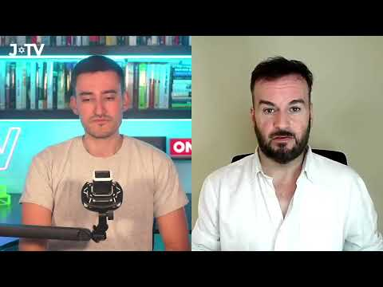
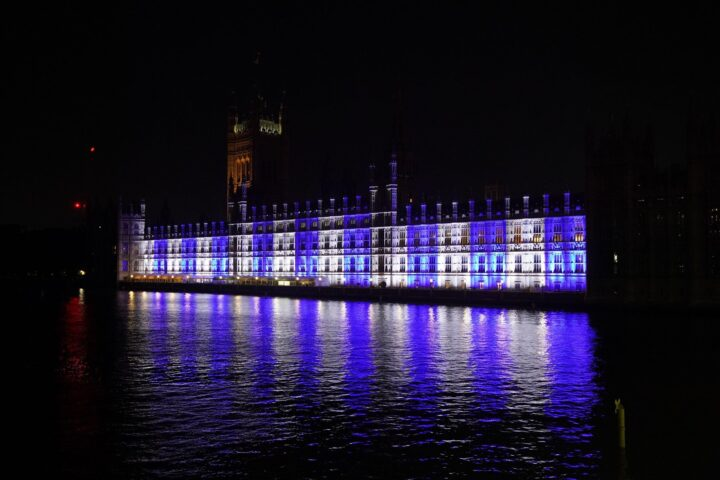
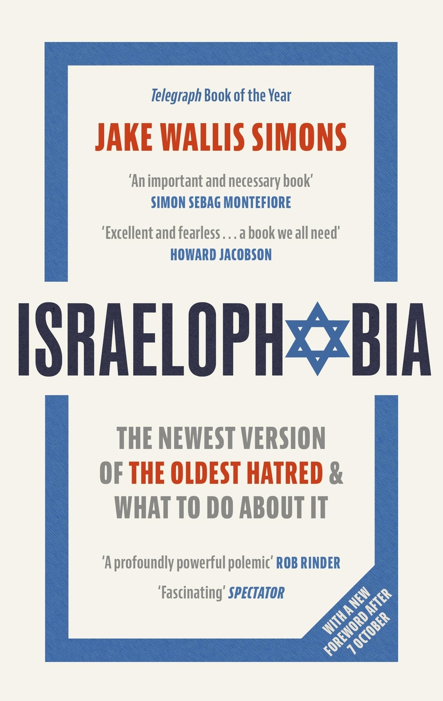
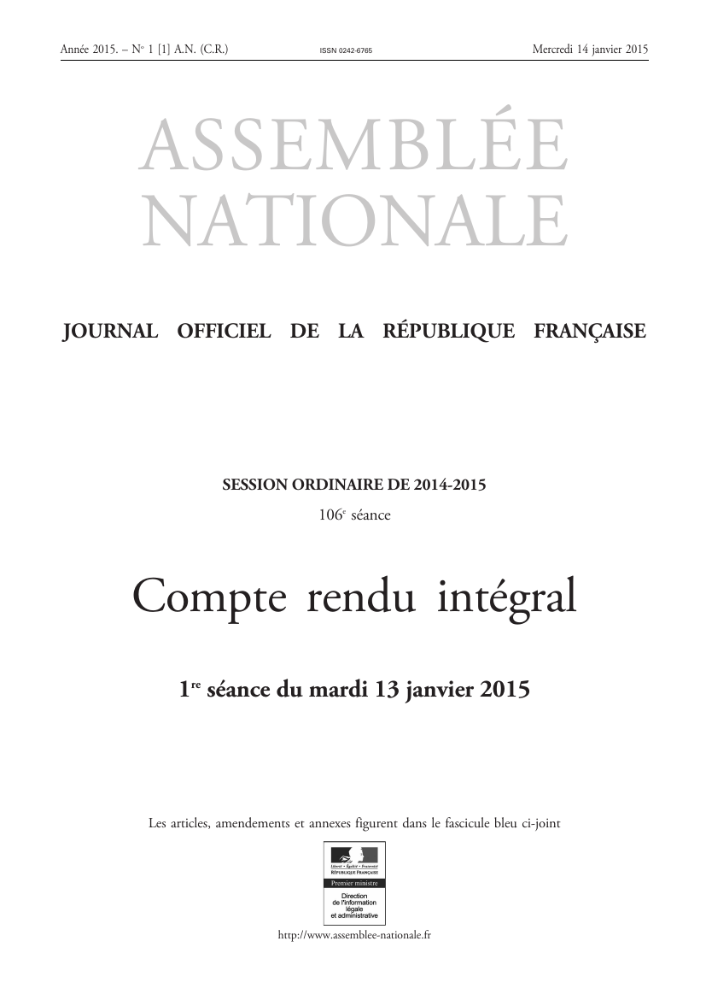

55:30 · 4 OPERE
Know the facts: Why Won't The Jews Just Let Themselves Be Killed?
Il filo del discorso
Come distinguere la critica politica dall’ostilità verso gli ebrei quando il dibattito su Israele è attraversato dalla violenza? Questa intervista di JTV, condotta da Ollie Anisfeld con Brendan O’Neill nel contesto dell’ottobre 2023, affronta la domanda dopo gli attacchi del 7 ottobre. Il titolo riprende un articolo di O’Neill su Spiked e ne concentra la provocazione: secondo l’ospite, una parte delle reazioni occidentali finirebbe per negare agli ebrei la legittimità di difendersi. È la tesi polemica del colloquio, che la scheda conserva senza attribuire la stessa intenzione a chiunque contesti il governo israeliano o manifesti per i palestinesi. O’Neill interpreta slogan, paragoni con il nazismo e alcune reazioni pubbliche come riapparizioni di motivi antisemiti. La conversazione passa dalla sinistra britannica e dal dibattito sul boicottaggio alle immagini di Israele come potere onnipresente. Il libro Israelophobia di Jake Wallis Simons fornisce un riferimento esplicito alla trasformazione storica dei linguaggi dell’odio. L’ospite collega questa lettura a una crisi della ragione e alla ricerca di un capro espiatorio; Anisfeld interviene sul rapporto fra memoria della Shoah, identità e partecipazione alla vita contemporanea. Le interpretazioni dei due interlocutori restano distinte dalla verifica dei singoli episodi ricordati. Una parte importante dell’intervista riguarda la risposta militare israeliana e il giudizio sulle vittime civili. Il contrasto proposto da O’Neill fra uccisione intenzionale e conseguenze della guerra richiede una precisazione: la qualificazione delle condotte dipende da fatti e regole applicabili a ogni parte, non dalla sola identità di chi attacca o si difende. Condannare gli attacchi contro civili e la presa di ostaggi non elimina gli obblighi di distinzione, proporzionalità e precauzione nella risposta. Neppure un ordine di evacuazione rende automaticamente lecito qualsiasi attacco o trasferimento. La scheda distingue inoltre Hamas dalla popolazione palestinese e non assume cifre provvisorie o sondaggi del 2023 come dati attuali. Il finale sposta il discorso verso la responsabilità pubblica: O’Neill presenta The October Declaration e sostiene la necessità di prendere posizione contro l’antisemitismo. Il richiamo alla Francia dopo gli attentati del 2015 e il confronto fra Jeremy Corbyn e Keir Starmer riportano la questione alla politica britannica di allora. Starmer è ancora leader dell’opposizione nel contesto della fonte. La conversazione si conclude con un appello alla parola pubblica e alla solidarietà con gli ebrei; la scheda ne rende leggibili argomenti, attribuzioni e limiti, senza trasformare la posizione politica degli interlocutori in una raccomandazione elettorale attuale.
I libri nel discorso

Why Won’t the Jews Just Let Themselves Be Killed? · intervista JTV
Anteprima originale YouTube/JTV · intervista: JTV, conversazione nel contesto dell’ottobre 2023 dopo il 7 ottobre. Giorno della prima pubblicazione da riscontrare; anteprima originale del video con questo identificativo, non copertina di un libro.
Miniatura restituita per lo stesso identificativo YouTube della fonte archiviata. Non certifica una data esatta di prima pubblicazione né sostituisce l’attribuzione degli interlocutori ricavata dal parlato.
Intervista in inglese JTV con Brendan O’Neill e Ollie Anisfeld identificati nel parlato. È la fonte del video archiviato, distinta da una lezione di Dr Divago.
Passaggio 0:00 ↗ · Fonti e libro ↗
The October Declaration
Foto di Westminster · presentazione della October Declaration: Dichiarazione pubblica dell’ottobre 2023. Fotografia di presentazione dal sito originale: Palazzo di Westminster a Londra illuminato di bianco e blu; non una copertina o un frontespizio del manifesto.
Immagine associata dal sito originale alla dichiarazione, distinta dal testo del manifesto e dal luogo degli attacchi. Il sito consultato contiene anche adesioni successive: non è assunto come elenco dei soli firmatari al lancio.
The October Declaration e British Friends of Israel esplicitamente presentati; riscontro sul testo del manifesto originale.
Passaggio 29:39 ↗ · Fonti e libro ↗
Israelophobia: The Newest Version of the Oldest Hatred & What To Do About It
Copertina ufficiale · tascabile 2024, successivo al video: Prima edizione rilegata: 7 settembre 2023, ISBN 9781408719275. Copertina mostrata: tascabile del 5 settembre 2024, 240 pagine, con nuova prefazione sul 7 ottobre; ISBN 9781408719282. Edizione successiva alla conversazione, non attribuita al video.
Edizione di riferimento successiva alla fonte dell’ottobre 2023. La nuova prefazione sul 7 ottobre è dichiarata sulla copertina; non viene retrodatata né considerata parte della edizione discussa nel colloquio. Consultati i dati editoriali, non il testo integrale del libro.
Israelophobia e Jake Wallis Simons nominati. Il riscontro editoriale corregge il nome nella trascrizione automatica e distingue il libro del 2023 dalla copertina del tascabile 2024.
Passaggio 37:47 ↗ · Fonti e libro ↗
Hommage aux victimes des attentats (intervento di Manuel Valls, 13 gennaio 2015)
Identificazione probabile
Frontespizio del resoconto dell’Assemblée nationale, 13 gennaio 2015: Frontespizio originale del resoconto ufficiale che contiene l’intervento: Assemblée nationale, prima seduta del 13 gennaio 2015, fascicolo pubblicato il 14 gennaio 2015. Estratta la terza pagina del PDF (indice 2).
È il frontespizio del contenitore parlamentare, non fotografia del discorso, copertina di un libro di Valls o edizione mostrata nel video. L’intervento è nella sezione Hommage aux victimes des attentats; la seconda dichiarazione dello stesso giorno sull’Iraq è distinta.
Nel passaggio: 94 s. Brendan O’Neill richiama per nome l’ex primo ministro francese, un discorso dopo gli attentati a Charlie Hebdo e al supermercato casher, la crisi della Repubblica e la frase sulla Francia senza ebrei, parafrasata a 2906,70 s. Titolo e giorno preciso non pronunciati. Il resoconto ufficiale del 13 gennaio corrisponde a entrambi i temi; la formula era già stata enunciata in precedenza.
Passaggio 47:53 ↗ · Fonti e libro ↗